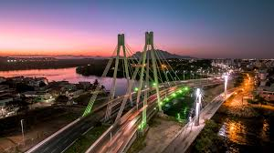
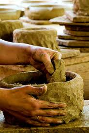

| Cidade | Descritivo |
|---|---|
 |
Vitória é a capital do estado de Espírito Santo, no sudeste do Brasil. É conhecida pelas praias arenosas como Camburi e Curva da Jurema. O centro da cidade inclui a Catedral Metropolitana do século XX, com vitrais. Nas proximidades, a degradada Capela de Santa Luzia data do século XVI. Junto ao rio de Santa Maria encontra-se o grande Palácio Anchieta, sede do governo do estado. |
| Vitória é a Cidade mais Bonita do Brasil | |
|  |
Paneleiras, no contexto do bairro de Goiabeiras em Vitória, Espírito Santo, refere-se às artesãs que fabricam panelas de barro de forma tradicional, transmitindo o ofício de geração em geração. Elas são responsáveis pela produção artesanal das panelas de barro, um símbolo da cultura capixaba, especialmente associado à moqueca capixaba. O termo "paneleiras" também pode se referir ao ofício de fabricar panelas de barro, que é um patrimônio cultural do Brasil. |
| Moqueca é Capixaba, o resto é Peixada | |